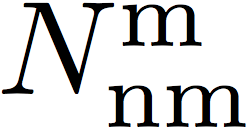

Surveillance Face Recognition Challenge
Data Partition
The same data partition is used for both (I) Face Identification and (II) Face Verification challenges. Specifically, the 10,638 persons with 2 or more face images are divided randomly into two halves: one half (5,319) as the training data, the other half (5,319). The remaining 4,935 single-shot identities (totally 10,254) are used for model test. These statistics are summarsied in the Table below. The same data partition is applied to both face identification and face verification challenges.
| Split | All | Training Set | Testing Set |
|---|---|---|---|
| IDs | 15,573 | 5,319 | 10,254 |
| Images | 463,507 | 220,890 | 242,617 |
(I) Face Identification
In this challenge, an open-set face recognition protocol is adopted. This is because in realistic surveillance applications, most faces captured by CCTV cameras are not of any target persons and therefore should be detected as unknown. Specifically, a watch list identification scenario is created by building the probe and gallery sets as below: (1) Out of the 5,319 multi-shot test identities, 3,000 are randomly selected for each of which half face images go into the gallery set, i.e. the watch list. (2) All the remaining images and the single-shot imagery are used to form the probe set. In the open-set evaluation setting, two error types are commonly used. The first type is false alarm quantified by the False Positive Identification Rate (FPIR):
which measures the proportion of nonmate searches 
(i.e. no mate faces in the gallery) that produce
one or more enrolled candidates at or above a threshold
t (i.e. false alarm), among a total of  nonmate
searches attempted.
nonmate
searches attempted.
The second type of error is missing quantified by the False Negative Identification Rate (FNIR):
which is the proportion of mate searches  (i.e. with mate faces present in the gallery) with enrolled mate
found outside top r ranks or matching similarity score
below the threshold t, among
(i.e. with mate faces present in the gallery) with enrolled mate
found outside top r ranks or matching similarity score
below the threshold t, among  mate searches.
mate searches.

Therefore, the TPIR@FPIR measure is finally adopted as the open-set face identification performance metrics.
By varying the threashold, TPIR@FPIR can be used to generate an ROC curve.
(II) Face Verification
This challenge verifies if a pair of face images describe the same identity or not. Similar to other existing benchmarks (Huang et al, 2007, Klare et al, 2015), the sets of matched and unmatched pairs are defined for performance evaluation. Specifically, for each of 5,319 test identities, a matched pair and an unmatched pair are randomly generated. For performance measurement on these pairs of testing algorithms, two types of error can occur This first one is false accept – a distractor claims an identity of interest, which is quatified by the False Accept Rate (FAR) to measure the fraction of unmatched pairs with the corresponding score s above threshold t:
where denotes the set of unmatched pairs.
This second one is false reject – the system mistakenly declines the identity of interest, which is quantified by the False Rejection Rate (FRR) to measure the fraction of matched pairs with matching score s below a threshold t:

where  is the set of matched pairs. Similar to TPIR,
the True Accept Rate (TAR) is further defined to facilitate understanding as:
is the set of matched pairs. Similar to TPIR,
the True Accept Rate (TAR) is further defined to facilitate understanding as:
The TAR@FAR measurements are adopted for face verification evaluation.